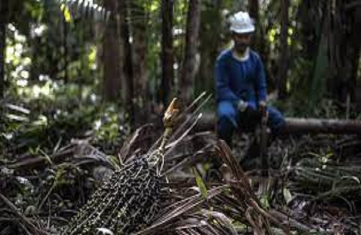

Bioeconomia atrai incentivos para gerar renda e manter a floresta em pé
13/05/2022 17h27 - Atualizado 13/05/2022 17h27
No início de julho, o Ministério da Ciência, Tecnologia e Inovações (MCTI) e a Financiadora de Estudos e Projetos (FINEP) anunciaram o investimento de 40 milhões de reais em dois editais para o Progra Cadeias Produtivas da Bioeconomia MCTI. O valor será destinado a projetos que promovam soluções aos entraves enfrentados na estruturação ou que fortaleçam as cadeias produtivas baseadas na biodiversidade brasileira.
No mesmo mês, um acordo entre a Empresa Brasileira de Inovação Industrial (EMBRAPII) e o Instituto de Conservação e Desenvolvimento Sustentável do Amazonas (IDESAM) foi firmado com o objetivo de “estimular projetos empresariais de Pesquisa, Desenvolvimento e Inovação (PD&I) para a exploração econômica sustentável da biodiversidade amazônica”. As iniciativas fazem parte de um movimento para fomentar soluções que gerem mais valor à floresta em pé.
Um exemplo que mostra como uma cadeia de um produto da biodiversidade pode gerar renda para comunidades tradicionais é o da cooperativa Amazonbai, localizada no Arquipélago do Bailique, no Amapá. Funddada em 2017, áreas produtivas foram certificadas com o selo FSC de manejo sustentável em 2016. Em dezembro de 2021, a Amazonbai inaugurou uma agroindústria em Macapá, capital do estado, com capacidade de processar e beneficiar até dois mil litros de açaí por dia.
Na década de 90, a geração de renda se dava principalmente pela exploração de palmito, que estimula a derrubada de árvores. Com a valorização do açaí no mercado internacional, manter a floresta em pé se tornou mais rentável e trouxe benefícios econômicos e sociais para os produtores locais.
Para o presidente da Amazonbai, Amiraldo Picanço, da mesma forma como o açaí trouxe melhorias para as comunidades, há outros produtos que podem ser explorados comercialmente, como andiroba, pracaxi e pescados. “A nossa floresta é riquíssima. O potencial é enorme. Quando a gente olha para as áreas de manejo, não olhamos só para o açaí, temos um olhar de diversidade de potenciais econômicos dentro da floresta”, disse.
De acordo com um estudo feito pelo Conselho Empresarial Mundial para o Desenvolvimento Sustentável (WBCSD), a oportunidade econômica para produtos de base biológica complementarem ou substituírem materiais convencionais pode chegar ao valor de 7,7 trilhões de dólares até 2030 para produtos feitos a partir de resíduos de alimentos e rações (excluindo o uso final desses produtos) e energia em dez indústrias.
Com a agroindústria, os cooperados da Amazonbai deram mais um passo em direção ao controle da cadeia de produção do início ao fim. Até então, eles precisavam vender o açaí para um intermediário que transforma o fruto em polpa. Agora, a cooperativa pode vender o produto diretamente ao cliente final.
A certificação do manejo foi mais um fator que contribuiu para o crescimento dos negócios. Para Bruno Castro, coordenador de certificação do Instituto de Manejo e Certificação Florestal e Agrícola (Imaflora), certificador autorizado pelo FSC, o processo ajuda a tirar da informalidade muitas situações de trabalho de extrativismo e a melhorar os processos internos de cooperativas e produtores.
“O selo também diferencia o produto de forma internacional. Ele exige que o produtor cumpra a legislação e vá um pouco além. É o mínimo necessário e, para se diferenciar, é preciso fazer um pouco a mais”, explicou. Atualmente, a Amazonbai tem o apoio de três empresas italianas que decidiram investir em projetos comunitários que mantêm estoques de carbono e a certificação foi um critério analisado para receber os recursos.
“Enquanto muitos produtores agem na ilegalidade de forma intencional, há vários que trabalham da forma correta há muito tempo. Infelizmente, às vezes os dois grupos são colocados no mesmo balaio. A certificação traz um reconhecimento da diferenciação de quem sempre fez certo e acaba por carregar a fama de quem faz errado”, disse Castro.
O edital público e as parcerias firmadas para estimular a bioeconomia nos biomas brasileiros têm o objetivo não só de reduzir o desmatamento, mas também de melhorar a qualidade de vida das pessoas que que integram essas cadeias. Com incentivo e investimentos, é possível desenvolver cadeias econômicas sustentáveis e que gerem benefícios para aqueles que mantêm a floresta em pé.